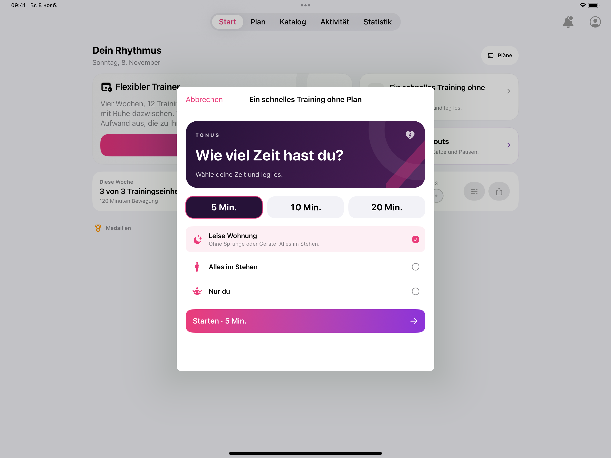
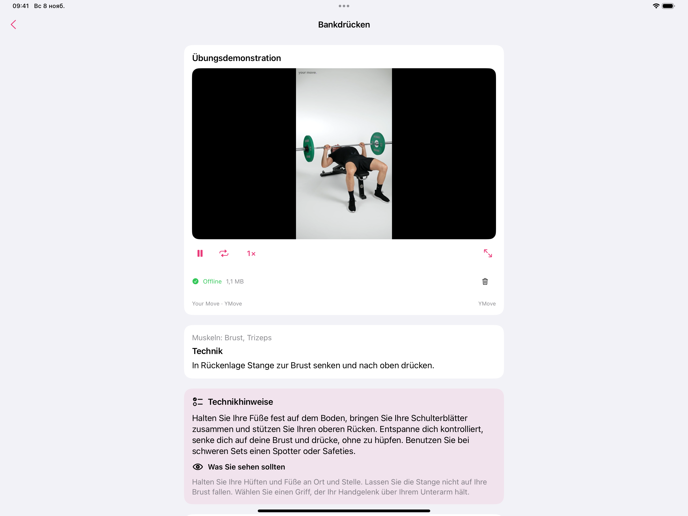

Von Nikita Revin, Entwickler von Tonus · 11. November 2026 · Tonus 1.7
Wenn das iPad beim Training auf einem Ständer steht, lässt sich der Timer aus etwas Abstand ablesen. Tonus 1.7 passt die Oberfläche ans Hoch- und Querformat an. Wenn Sie das iPad mitten in einer Einheit umstellen möchten, können Sie den Timer vorher anhalten und bei derselben Übung weitermachen.
Eine kurze Einheit starten
Öffnen Sie auf dem Tab „Start“ die Karte „Ein schnelles Training ohne Plan“. Im Querformat erscheint die Auswahl als Fenster über der Startseite. Wählen Sie die Dauer und die Trainingsart. Bei „Leise Wohnung“ bleiben Sie im Stehen und brauchen weder Sprünge noch Geräte. Erst mit „Starten“ beginnt der Timer.

Beim Drehen an derselben Stelle bleiben
Tippen Sie während der kurzen Einheit auf das Pausensymbol und drehen Sie das iPad. Die aktuelle Übung und die verbleibende Zeit bleiben beim Wechsel der Ausrichtung erhalten. Tippen Sie auf das Wiedergabesymbol, sobald das iPad wieder so steht, dass Sie den Bildschirm sehen. Der Timer läuft ab der angehaltenen Zeit weiter.
Falls der Bildschirm beim Drehen in derselben Ausrichtung bleibt, prüfen Sie die Ausrichtungssperre im Kontrollzentrum des iPads.
Eine Übung vor dem Start nachlesen
Im Tab „Katalog“ können Sie eine Übung öffnen, bevor der Timer läuft. Die Karte zeigt die Demonstration, die beteiligten Muskeln und schriftliche Technikhinweise. Das ist praktisch, wenn Sie eine Bewegung erst nachlesen und anschließend zur Trainingsauswahl zurückgehen möchten.

Trainingspläne und schriftliche Hinweise können Sie ohne Internet nutzen. Online-Videos brauchen eine Verbindung. Externe Videodienste können Werbung anzeigen.
Tonus im App Store ansehen